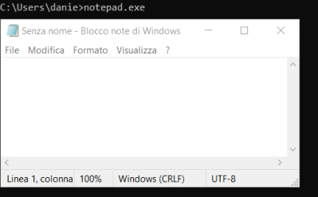

PATH
The variable PATH contains the locations separated by ; where the OS have to search for command line programs
On Windows the
directory slashes are backslash
\ instead of the slash
/ used on Linux
Unlike Linux only few Windows programs support a command line interface, thus executing them from there might result in launching a GUI of the software.
